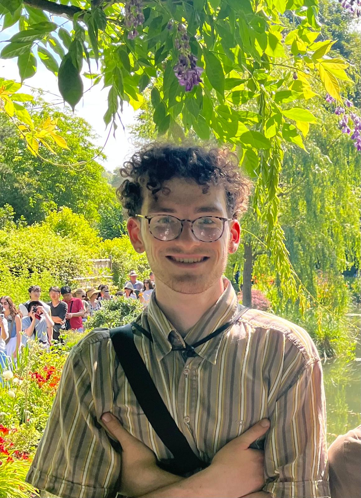
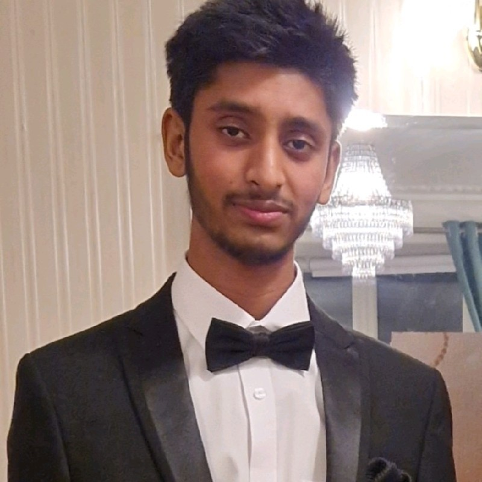

Get Involved Research fellowship applications
Apply to the Research Fellowship
A month working on an open problem in AI safety with a mentor, ending in a write-up for the Mercial blog. Each mentor runs a stream of problems they have chosen to supervise. You apply to a stream and tell us which of its problems you would be excited to work on.
Research Fellowship 1 runs 1 October – 1 November. Applications close on Friday 25 September. We read everything after the deadline rather than on a rolling basis, so applying early and applying late are treated the same. Offers go out a few days after the deadline.
How it works
-
Pick a stream
Read the three streams below. Each problem expands to show the full brief: the question, what you need coming in, and what you will have produced by the end.
-
Apply to it
One short form per stream. You tell us your background, how much you have interacted with AI safety, rank the problems in that stream, and confirm you have the weekly capacity. Apply to more than one stream if you like.
-
Have a chat
We invite you to an informal conversation, mostly to gauge fit and answer your questions.
-
Join the cohort
Mentors read applications to their stream and make picks; we resolve any overlaps so each applicant gets at most one offer. You will hear from us either way.
Streams
Technical experience is not required for the fellowship — some streams are conceptual. Compute funding is available for the ones that need it. If you are unsure whether you are ready, err on the side of applying.
James Sykes
Statistics PhD at Warwick
Why are the top AI labs all calling for a slowdown?
The problem. Write a report on what has changed in the AI landscape recently. This could include a risk report on GPT-6 Astra and an outline of what we can infer about the capabilities of OpenAI's new "internal model". Mentees could also cover the debate about LLMs' mathematical capabilities, including the many recent developments in this space (e.g. Navier-Stokes), as well as the Hugging Face incident and the subsequent response (e.g. the METR investigation and Amodei's "We Must Pace the Frontier"). As a main focus of the report, it would be valuable to investigate how close we are to recursive self-improvement and the resulting implications of this.
You'll need. Good understanding of the overall AI landscape, and a desire to thoroughly investigate a problem, considering multiple different angles, to come to a well-reasoned conclusion. You should have excellent writing ability.
Commitment. ~5 hrs/week for 4 weeks · Write-up. Well-argued blog post

Lachlan Ewart
SPAR research fellow, Mercial Director
How can we use geometry to improve probe robustness?
The problem. When we use a deception probe against models in reinforcement learning, they learn to trick the probe. As probes are essentially looking for some characteristic in the residual activation streams, the model may be learning a simple linear transformation, like a rotation, to alter its geometry to trick the probe, whilst maintaining structure. We test this hypothesis using an open-source codebase from Neel Nanda. I have made some more in-depth notes here.
First two weeks. Read the relevant papers, replicate their results, and train deception probes. Plan the best ways to find evidence for or against the hypothesis, and run some low-cost experiments.
You'll need. You should be comfortable with first-year university level maths, and thinking abstractly. Strong programming skills are not required, but you should be able to competently use Python. You should be able to learn quickly, and be committed to the project!
Commitment. ~6 hrs/week for 4 weeks · Write-up. A post making the case for our assumption, and relevant evidence we find in our investigation. We will also talk about how much this might generalise to larger models.
How long will open weight models stay open weight?
The problem. Open weight models are about 4 months behind closed weight models. This project would look at the likelihood of a Rogue Agent Catastrophe with open weight models at the capability level of Mythos or Astra, and investigate how likely it is that action will be taken to protect humanity against this.
First two weeks. Spend time reading and gaining a deep knowledge of factors affecting likelihoods of different harm pathways. Critique current literature.
You'll need. Excellent writing abilities. Previous writing is a plus (e.g. you have a substack). You should think through arguments in depth and look for weaknesses in assumptions.
Commitment. ~4 hrs/week for 4 weeks · Write-up. Well-argued post

Rohan Neelala
MPhil Philosophy student at Warwick
Right now, is alignment research the best thing for the AI Safety community to pursue?
The problem. Recently, an argument has been circulating on alignment forums that alignment is net negative, as it causes us to overstate how aligned models are, while underestimating catastrophic risk, and in fact it is better to let a smaller catastrophe happen now to wake up the public. The case is also made that certain alignment techniques, like RLVR, make models less aligned. It would be good to do a deep investigation on this, looking at the strengths and weaknesses of this position.
First two weeks. Familiarise yourself with the literature surrounding this, such as this LessWrong post.
You'll need. Strong writing and communication skills.
Commitment. ~4 hrs/week for 4 weeks · Write-up. Blog post
Have your own problem?
Fellows can also propose their own idea. Apply to the stream whose mentor is the closest fit and describe your problem in the form; if it is a good match, the mentor can take it on instead of one of theirs.
Questions
Not sure which stream, or whether you have the background? Email us or ask in the Slack. If you would rather mentor a fellow than be one, see the mentor page.